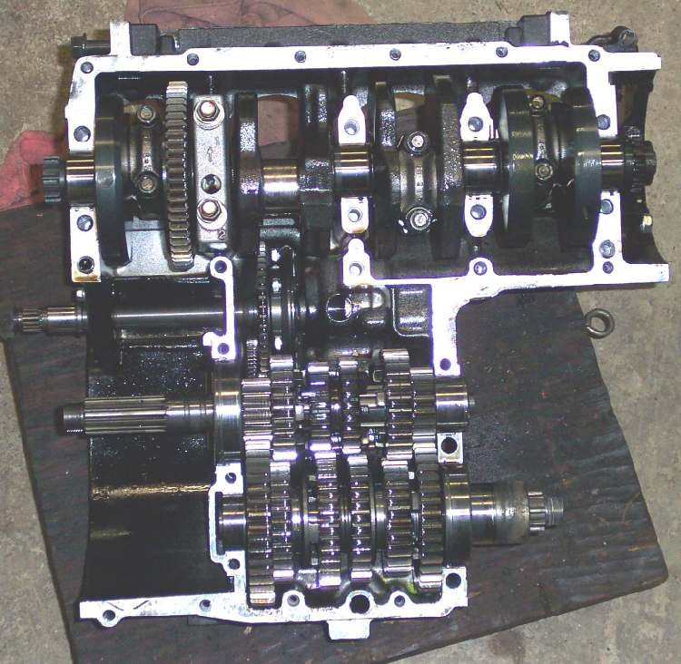
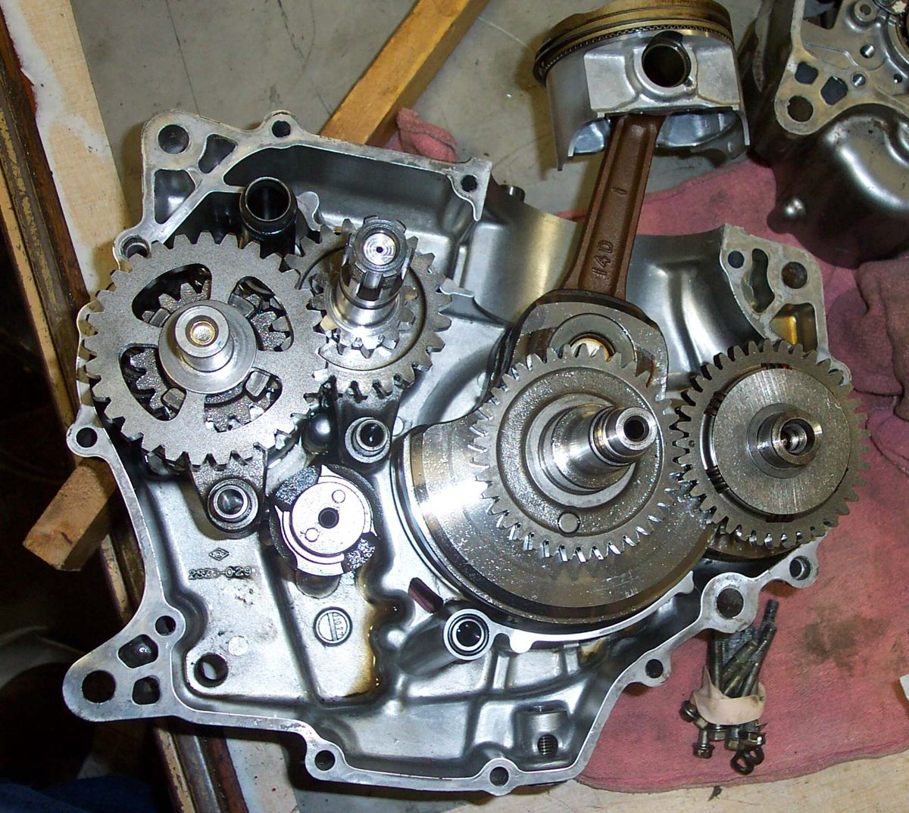
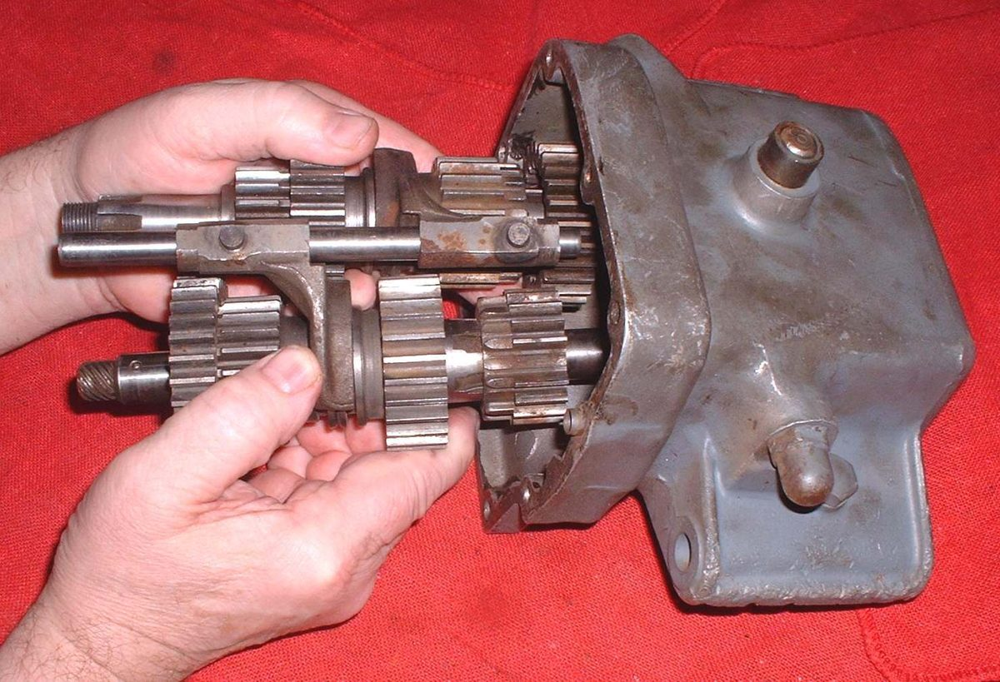
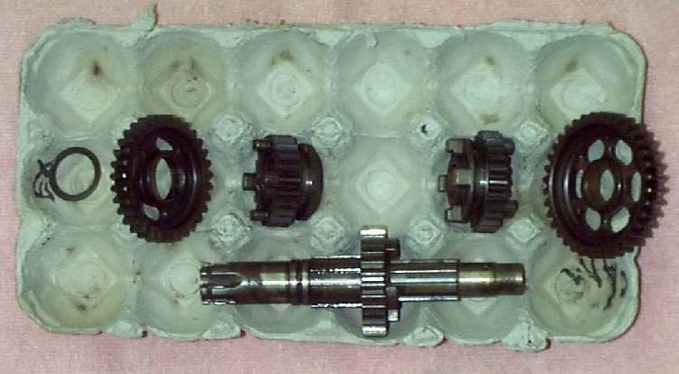
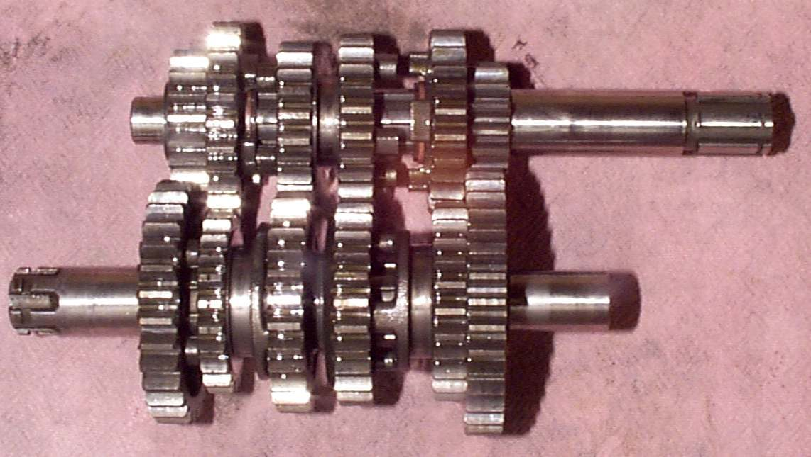
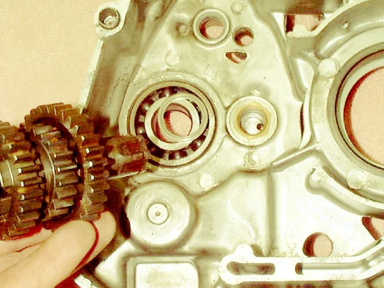

A motorcycle gearbox has two shafts, gears in constant mesh, sliding gears with dogs, shift forks and a shift drum. This page covers how to strip one without losing the order of the parts. The order matters because shafts and gears that go back in reversed wear in a different pattern and wear quickly.
Safety
- Drain the oil and let the engine cool. Support the engine so it cannot fall.
- Wear eye protection when removing circlips.
- Gear teeth and shims have sharp edges.
You need
- Tools to split the case. The type depends on the engine: horizontally split, vertically split or cassette.
- Circlip pliers, a soft mallet, a marker pen, solvent and rags.
- A cardboard egg carton or tray to hold the parts in order.
- The shop manual, a gasket set, new circlips and fresh gearbox oil.
Know the case type
- Horizontally split. The case parts a seam on the horizontal plane. Most multi-cylinder engines are like this. The head does not need to come off.
- Vertically split. The seam is on the vertical plane. Most single-cylinder engines are like this.
- Cassette. The gears load in from one side as one unit.
Steps
- Photograph the shifter, shafts and shims before anything moves.
- Clean rust and dirt from the outer end of the countershaft, where the sprocket sits, so it slides through the bearing without damage.
- Split the case as the manual shows. Lift out the shafts, drum and forks gently, as one unit if the design allows. On some engines the fork shafts come out first, then the drum, then the gear clusters.
- Look for shims, which are thin, large washers on the ends of shafts. They set gear position and take up side play, and they tend to stick to bearings.
- Take the gear shafts apart one part at a time and lay each part in the carton in the order it came off. Mark the carton cells with a pen.
- Clean all parts in solvent and check them: Inspect the gear shift drum, pawl and forks.
- Check teeth for chips, bent teeth or debris stuck in the teeth. Broken teeth are usually noisy. A noisy gear with no broken tooth may have a bent tooth or a piece of metal stuck to it.
- Check dogs and dog holes for rounding. Replace a worn gear and its mate on the other shaft.
- Light pitting on teeth is common. Judge by the value and power of the bike. A cheap commuter does not need an expensive new set if the pits are light and the noise is normal.
- Bearings run in an oil bath and rarely wear out. If they spin smoothly and have no play, they can stay.
- Rebuild in the reverse order, in the exact original positions, with every shim and circlip back where it was.
Check your work
- All parts are back in their original positions and every circlip is seated.
- Both shafts turn freely by hand and each gear selects with the case closed.
- The case is sealed and filled with the right oil.
When to go to a workshop
- A broken gear, a cracked case or damaged bearings.
- Unclear shim order, or no manual for the engine.